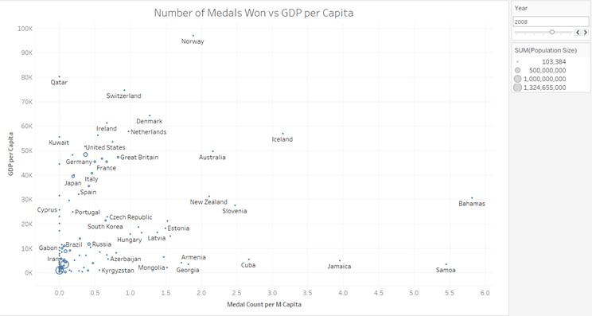
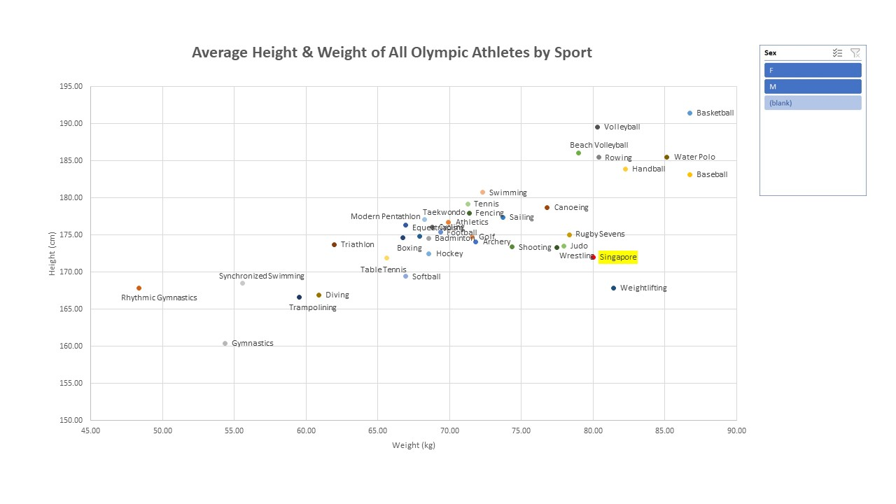
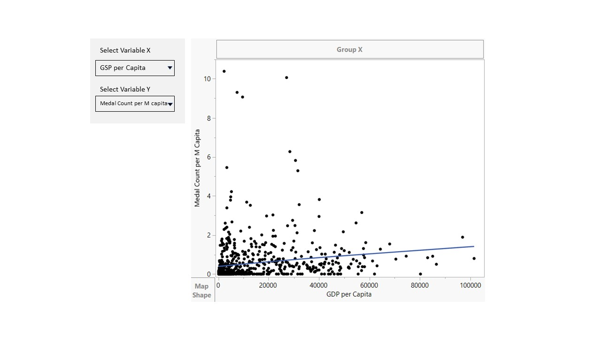
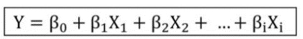

Project Proposal
Project Motivation
The next Summer Olympics will take place from 26 July to 11 August 2024 in Paris, France. In the run-up to the event, our bosses at an online newspaper have asked Sports Desk (that’s us) to pitch an idea for a Special Report on the Olympics that will engage interest and increase readership.
Our Special Report will take the form of an R Shiny app comprising four sections:
Interactive maps that allowing visitors to visualise how countries across the world compare in terms of Olympics performance or for any one of the top ten most popular Summer Olympic sports. Visitors may also compare the worldwide distribution of performance with that of factors that many might perceive as influencing performance, such as GDP per capita or country mean Body Mass Index.
Exploratory data analysis allowing visitors to deep dive into the statistical relationships between performance and potential explanatory variables chosen by the visitor
A section allowing readers to identify country clusters that might each have unique logistic regression models that predict performance success
A performance prediction dashboard using our identified multi-variate regression models and the option to modify parameters and observe changes in expected results
The goal is to provide a user-friendly web-based application that allows reader to conduct their own data exploration and obtain insights to country and sport-level performance at the Summer Olympics.
Approach
Scope
Summer Olympics from 1996 to 2020 inclusive. Both country-level and sport-level medal tallies will be included for Summer Olympics up to 2016. Due to data availability, sport-level medal tallies for 2020 will be limited to the top 10 most popular summer olympic sports.
Country medal tallies, selected macroeconomic and population-level data, as well as results across the 36 summer olympic sports, from 1996 to 2016, will be used in the exploratory data analysis, clustering and regression models. As Chinese Taipei is absent from our data source for macroeconomic and population-level data, it is omitted from our scope.
In the context of our predictive regression models, a “win” is considered as any win resulting in a Gold, Silver or Bronze medal.
Data Sources
| Data Attributes | Description | Source | Dataset Limitations |
|---|---|---|---|
| Olympic Medallists | Years 1996 to 2016. Dimensions: Sport, Gender, Age, Height, Eight, Country Represented, Host Country, Medal |
(data scraped from www.sports-reference.com) |
9,474/271,117 (3.5%) of records are missing age and height data. 60,171/271,116 (22.2%) are missing weight data. |
| Country-level Medal Tally | Year 2020 (supplements the first dataset). Golds, Silvers and Bronzes. | Kaggle | Dataset includes only countries that won at least one medal. |
| Sport-level Medal Tally | Year 2020 (supplements the first dataset). Golds, Silvers and Bronzes. | www.olympedia.org | As this data is manually consolidated and will be used primarily for the map-wise visualisation, it will include only the top 10 most popular summer olympic sports. |
| Population size | Years 1996 to 2020 | World Bank | |
| Population average height | Years 1996 to 2016 | NCDRisC | As data was not available past 2019, we will use only data up to 2016 (latest Summer Olympics year in the available dataset). |
| Population average Body Mass Index (BMI) | Years 1996 to 2016 | NCDRisC | Data is not available past 2016. |
| Population average weight | Years 1996 to 2016 | (Derived) | (Derived from height and BMI datasets.) |
| Country land area | World Bank | ||
| GDP | Years 1996 to 2020 | World Bank | |
| Inflation rate | Years 1996 to 2020 | World Bank | 30 of 269 unique countries/regions are missing data |
| Energy use | Years 1996 to 2015 | World Bank | When joined with Summer Olympics participant countries, 20.1% records are missing data. |
| Government expenditure on education | Years 1970 to 2019 | World Bank | When joined with Summer Olympics participant countries, 32.5% of records are missing data. |
Data is consolidated into three datasets: Country-level (1996 to 2016), Sport-level (1996 to 2016) and 2020 (2020).
Visualisations on World and Regional Maps
The landing page for our data visualisations on shinyapps.io will feature an interactive world map. Below is a mock-up:

Comparing country performance at the Summer Olympics
Using a slider, the visitor is able to select any Summer Olympics from the years 1996 to 2020, to see how each country performed that year, based on total medals won.
In 2020, the New York Times was criticised by Chinese and Russian media outlets for putting the United States at the top of the Olympic medal ratings, based on total medals won. It was argued that what mattered was the number of Gold medals won. Others suggested a simple weighted total of 3:2:1 (for Gold medals : Silver medals : Bronze medals). To avoid provoking similar controversy with our Special Report, our interactive World Map will allow the user to select either one of the three performance indicators to visualise the comparative performance of countries. The user can select from “Gold Medals Won”, “Total Medals Won” and “Weighted”. The default would be “Weighted”.
Readers would likely be interested in knowing whether a country did better or worse than the previous Summer Olympics, given their choice of performance indicator. There will be another drop down menu where the user can choose to view the performance for the year, and whether performance had declined or improved. This will be demonstrated in gradient colour again, with performance in the current year shown as a percentage of performance in the previous Summer Olympics.
Comparing countries across Performance + one potential explanatory variable
Readers also have the choice to select a second map to visualise how countries differ in terms of an explanatory factor such as GDP, and compare both maps to observe for themselves if any patterns emerge.
Tooltips / Popovers
When the reader hovers over a country on the map, a Tooltip or Popover will appear, showing the country’s name and the performance indicator value. We will examine if it is feasible to include more details in the Tooltip or Popover, based on the level of reader interest it might generate.
Zoom into Asia
As the majority of our readership is Singaporean, we expect high interest in the performance of Singapore and other Asian countries. Given the comparative size of Singapore in relation to the world map, we will include the option to view only the performance of countries within Asia, making it easier for visitors to view the performance of smaller countries such as Singapore.
Exploratory Data Analysis
Exploratory data analysis will first be performed to draw insights on historical relationships between parameters (e.g. GDP, population size) and outcome (Olympic medal count), both by country and sport. Equally of interest is if the impact of these variables on outcome, changed over time. This is give user an idea on the patterns of country and athletes participating in different sports.
Number of medals won vs GDP per capita
A bubble chart can be built from “country level dataset” to visualise the relationship between GDP per capita vs Number of Medals Won. This can proof that hypothesis that whether countries’ wealth is related to the number of medals won by a country. X axis represents the medal count per M capita and Y axis for GDP per capita. The slider on the left allows user to select different years and the size of the bubble represents the population size. We will also add tool tip to show the additional information such as GDP, GDP per capita and the population information of each country. See below for the prototype.

Average Height and Weight of Athletes by Sport
We can also build a scatter plot by using the “sports level dataset” to illustrate the relationship between height and weight for all sports type. The purpose is to understand the athletes profile of each sports. The radar box on the left allows user to select the view for female and male separately, because different gender could have different athlete profile.

Correlation Analysis
Thissection is to explore the correlation between parameters. This will help us to select the right parameter for the later Clustering analysis and help us to exclude the parameters that might lead to multicollinearity.
Bivariate Analysis
Bivariate analysis will be conducted on parameters (X variables) against medal won (Y variable). We will include parameters such as height, sex, weight, age from sports level data set, and GDP, GDP per Capita, population size, land area, inflation rate from “country level dataset”. The filter at the left allows user to choose the statistical method to calculate the correlation and choose different parameters. Below is a mockup of the dashboard.

Multivariate Analysis
Multivariate analysis will be conducted on different parameters to calculate correlation. The purpose is to help us to remove highly dependent variables which will lead to multicollinearity when performing predictive analysis. The left bar allows users to select variables for the multivariate analysis and also the statistical method. The right chart display the correlation value with highly correlated coloured in green and low correlation coloured in red. The chart is dynamic base on the parameters selected on the left. We can also use other visual diagram such as correlogram to reveal the pair relationship of the variables.

Country Clustering Analysis
Cluster Analysis will be conducted on the country level dataset to classify countries into smaller clusters for the purpose of building a prediction model (described in section 4 below). The assumption here is that countries that are too diverse in nature (e.g, Olympic powerhouses like the United States vs smaller city states like Singapore) tend to exhibit varying characteristics, which may result in building an inappropriate model. As such, there is a need to build the predictive model at a more granular level (i.e., cluster level) in order to achieve a greater degree of prediction accuracy.
We will explore visualisation methods such as dendrograms and heatmaps, and identify the ideal method for our app.
Predictive Modelling
Two regression models will be built.
Model 1: Country Regression View
The first regression model to be built incorporates the country perspective and seeks to address key questions such as how many athletes and sports a country should participate in, in order to maximise the number of Olympic medals won. We plan to build a regression model based on the following variables:
| Variable | Description |
|---|---|
| Dependent | Olympic Medal Count (Gold, Silver and Bronze each contributes 1 count) |
| Independent | Uncontrollable: Population size, Land Area of Country, Average Population BMI, GDP, Inflation Rate, CO2 Emissions, Energy Use, Government Expenditure on Education Controllable: Number of Athletes to Field, Number of Sports to Participate In |

With the regression model built from historical and other countries' data, this can be applied to a specific country's context. With fixed (i.e., uncontrollable) inputs such as a country's population size and land area, controllable inputs like number of athletes to field, number of sports to participate in can be passed to predict the medal count (output).
Model 2: Sports Regression View
At times, the difference between success and failure in the Olympics hinges on having the right body type to suit that particular sport. For example, marathon runners are typically light and lean, while weightlifters tend to be more compact and muscular. This regression model will attempt to predict the medal count for a given sport based on an athlete's basic biometric information. We plan to build a regression model based on the following variables:
| Variable | Description |
|---|---|
| Dependent | Olympic Medal Count (Gold, Silver and Bronze each contributes 1 count) |
| Independent | Height, Weight, Age, Gender |
The regression model leverages on historical Olympic medallist data to explain the relationship of the independent input variables on the dependent variable. Users of this model will be able to understand how an athlete's biometric circumstance can affect his / her medalling prospects. From a governmental standpoint, this can also be relevant for athlete selection for the Olympics.
Packages Required
We minimally expect to use at least the following packages:
dplyr, tidyverse, ggplot, ggstatsplot, corrplot, gganimate, DT, ggiraph